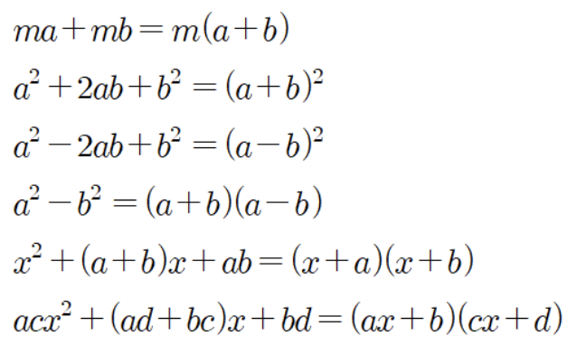

다항식의 곱셈
다항식의 곱셈은 (다항식) X (다항식) 꼴로 분배법칙을 이용하여 전개할 수 있습니다.
인수분해
소인수분해는 자연수를 소수의 곱으로 나타내는 것을 말했습니다. 여기서 소인수는 소수로, 소수의 곱으로 표현했을 때 그 수를 의미했습니다.
인수란, 하나의 다항식이 둘 이상의 다항식의 곱으로 나타낼 수 있을때 각 다항식을 말합니다.
예를 들어, 3x + 6은 3과 x + 2의 곱으로 나타낼 수 있습니다.
인수분해의 뜻
인수분해란, 다항식을 인수의 곱으로 나타내는 과정을 말합니다.
다항식의 곱을 간단히 나타낸 것을 전개라고 하는데, 인수분해는 전개의 반대 과정이라고 볼 수 있습니다.
여러가지 인수분해 공식
